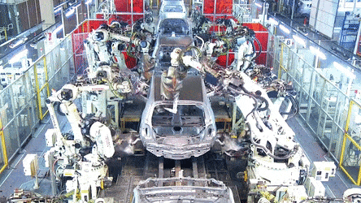
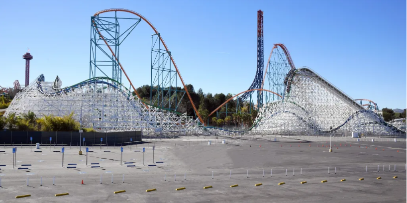
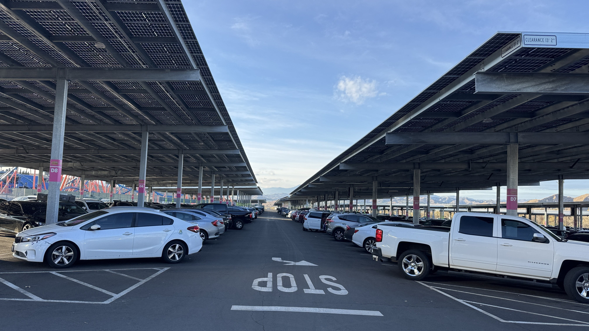

⚙️ Before and After the Drive 🧰
Manufacturing EVs requires large amounts of energy and raw materials, including metals such as copper, lithium, and nickel that require the use of heavy machinery to obtain. The processes by which we obtain and use those materials can have significant environmental impacts on their own. For example, the manufacturing of EVs doesn’t change anything about the use of large-scale factories, which tend to generate significant amounts of pollutants in the process of making any kind of car. Furthermore, EVs use high amounts of rare earth elements in their batteries, which are sometimes highly toxic and can pose significant harm to people and the environment in the event of the battery leaking or exploding. The disposal of used batteries is also an issue, as they can leach toxic chemicals into the soil and water if not disposed of in particular ways. The lifespan of the batteries is also a unique challenge because both high and low temperature can reduce their range before needing to charge again. While EVs may have lower emissions than ICE vehicles over their lifetime use, they also have significant environmental impacts during their production.
Another thing to consider is the environmental impacts that EVs still have while in use. Sure, an EV has no tailpipe to emit greenhouse gases from, but the powerplants that let EVs recharge tend to. In 2022, emissions of carbon dioxide from power plants in the United States that burn coal and natural gas totaled to 1.5 billion metric tons. It’s only when major steps to make this change as well that the direct benefits of EVs make more sense, like Six Flags Magic Mountain has installed tons of solar panels as shade cover over the main parking lot. They aim to offset greenhouse gas emissions each year comparable to 34,194 barrels of oil consumed and 5,110 tons of waste recycled rather than landfilled, as well as offsetting carbon dioxide equivalents each year comparable to taking 3,182 ICE cars off the road. Projects like this will help with all sorts of problems related to electrical consumption, especially as more people will own EVs and need to recharge them all at the same time. If we are going to make cars produce less-to-no carbon dioxide, we should be finding more ways to do the same with powerplant smokestacks, lest we just move the problem elsewhere by making more of them that burn coal and natural gas.




W.A.E.V. Disambiguation Solutions
copyright 2025, no rights reserved